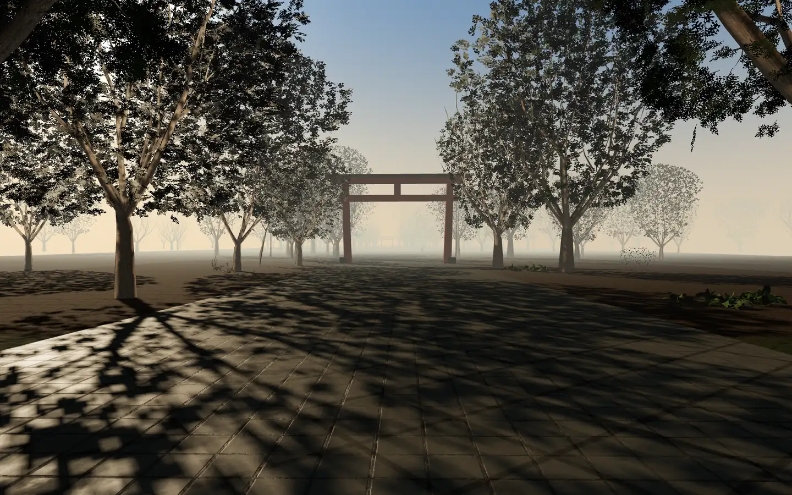
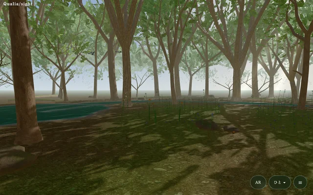
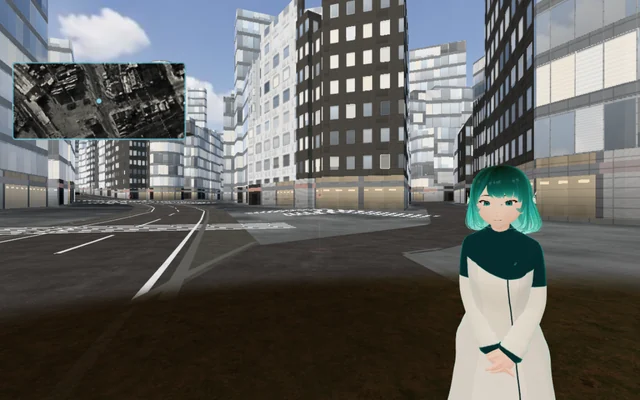
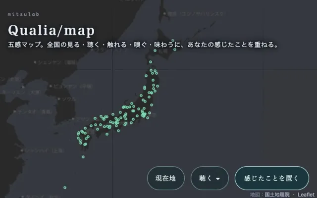
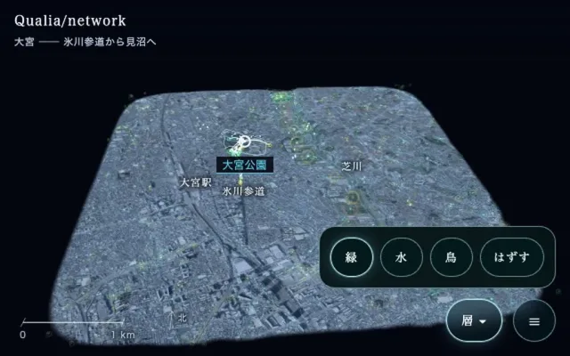
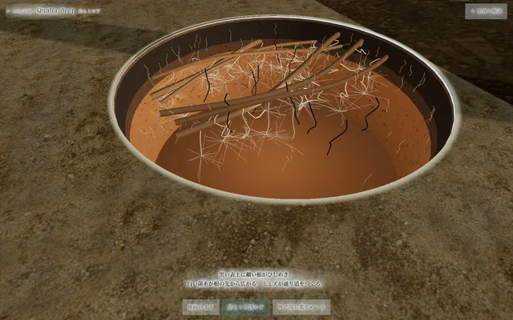
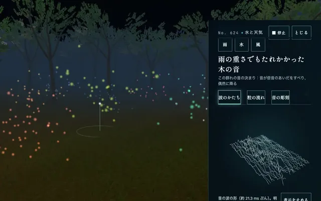
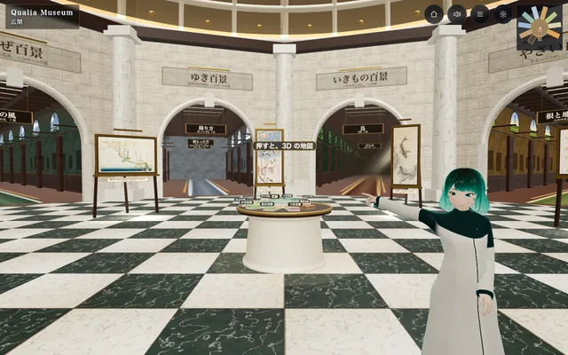
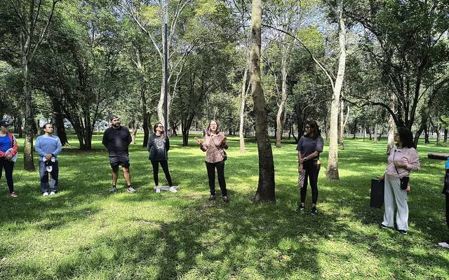
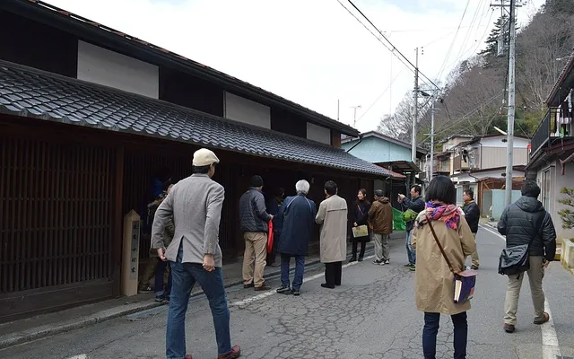

HIKAWA SANDOD 0000 m · H 80 m
夢のような、現実へ。
世界の受けとり方を広げ、
世界へのはたらきかけを変える。
認知と環境をつなぐ場、
Qualium をつくる。


ミツバチの目：人には見えない紫外の光（模式）

コウモリの耳：超音波のこだまで道を知る（模式）

土の中：根と菌がつながる（模式）
＋ 模式と出典
背景：氷川参道の 3D から撮った一枚（並木・石畳・鳥居は模式で、実際の景色そのままではない）。その上に重なる線と点（オブジェクト・エージェント・関係・受けとれる範囲・センサーの点・地面の下の層・水の流れ）は、考え方を表す模式で、測った値ではない。「寛永 5 年（1628）まで中山道だった」は氷川神社の由緒による。漢文は『荘子』斉物論。テーマ：胡蝶の夢（『荘子』斉物論）。
場面は確かめた事実にもとづく模式です。ミツバチの紫外の受容器のピーク 約 344 nm（Peitsch et al. 1992）。アブラコウモリの鳴き声 約 87→43 kHz（Luo et al. 2007, Zoological Studies 46(5)）。温帯の多くの木の年輪は一年に一つ。音は 10 分の 1 の高さに移した模式。ミツバチの羽音 約 230 Hz（Altshuler et al. 2005）。地図：PLATEAU さいたま市 2022（CC BY 4.0）・OpenStreetMap（ODbL）。石畳：ambientCG PavingStones133（CC0）。落ち葉：Poly Haven（CC0）。
物語
胡蝶の夢
蝶になった夢を見た。
目が覚めると、人だった。
人が蝶の夢を見たのか、
蝶が人の夢を見ているのか。
世界は、人が感じているよりずっと広い。同じ参道に、蝶の世界があり、鳥の世界があり、人の世界があり、計算機がとらえる世界がある。どれも本当で、どれも、ほかの誰かには夢のよう。
いま、認知のあり方が変わりはじめている。AI の計算が、見ること・聴くこと・意味づけることの一部を担い、認知は一人の頭の中で閉じなくなった。
人は、ほかの生き物の受けとり方に入り込める。ミツバチの紫外、コウモリの超音波。センサーと AI の受けとり方も、人とも生き物とも違う。mitsulab は、それらを確かめた事実にもとづく模式で、ふれられる形に移しかえる。
碧（あおい）は、mitsulab の道具の案内役。場所の記憶をたどり、生き物や機械の受けとり方を、人がふれられる形に移しかえる。世界と世界のあわいに立ち、なめらかにうつりかわる。いつもの景色に戻ると、景色は少しだけ違って見える。
世界の受けとり方を広げる Qualium と、世界へのはたらきかけを広げる Physium。mitsulab は、この二つがめぐりあう場を、イノベーションプラットフォームとして実装する。
LOOP — P · E · M · U · a
Q-P サイクル
同じ参道でも、蝶と鳥と人では、見えている世界が違う。
そして人が手を入れると、場が変わり、また受けとり方が変わる。
Qualium 式
Ui=f(Pi,E,Mi)
世界の受けとり方を表現した式
Physium 式
E′=a(E,Ui)
世界へのはたらきかけを表現した式
＋ ひらく：記号の意味と、二つの式のつながり
Qualium 式
- i
- 一人ひとりの受けとり手
- P
- 知覚 ∋ { 視覚, 聴覚, 触覚 … }
- E
- 環境 ∋ { 場, 物, エージェント j … }
- M
- 意味づけ ∋ { 言語, 文化, エンジニアリング, アート, 文学 … }
- U
- 環世界
一人ひとり（i）が、環境 E を知覚 P で受けとり、意味づけ M で読み、その環世界 U が立ち上がる。同じ E でも、P と M が違えば U は違う（蝶・鳥・人・碧・AI）。
Physium 式
- a
- はたらきかけ
- E′
- はたらきかけのあとの環境
環世界 U をもった受けとり手が、はたらきかけ a（土木・造園・農業・林業、手入れ、道具を使った行い）で環境にはたらきかけ、E が E′ に変わる。E′ は、次の Qualium 式の E になる。
QualiumUi(t) = f( Pi, E(t), Mi )
PhysiumE(t+1) = a( E(t), Ui(t) )
フィジカル AI が浸透すると、認知と作用は一続きになりうる。
図は受けとる順（P → M → U → a → E）にめぐる。
Qualium 式と Physium 式は、レヴィンの B = f(P, E) とユクスキュルの環世界にならい、mitsulab が定義した関係を整理するための数式。

APPLICATIONS — P · E · M
その式を、ひらく道具 ── アプリケーション
PTECHNOLOGY
知覚をひらく
人の感覚では届かない色・音・手ざわりを、受けとれる形にする道具。
知覚 P ∋ { 視覚, 聴覚, 触覚 … }＝身体と感覚で手がかりを受けとるはたらき。
QualiumUi = f( Pi, E, Mi )
TOOLS · 04

Qualia/sight一つの森を、押した所へ歩く。上に並ぶ 3D の体を回すと、ひとからミツバチ・小鳥・犬・コウモリ、カメラと熱カメラまで、10 の受けとり方に切りかわる。ミツバチの紫外、マムシの熱（赤外）も、この中で。近所の花は、蜂にはどう見えているだろう。
ひらく Qualia/hear
Qualia/hear聞こえない音を聞く。夕方の森で、マイクが拾った 15 kHz より高い音を、聴こえる高さに下ろして鳴らす。虫の声や機械のかすかな音が、急に近くなる。コウモリの声は、時間を 10 倍・高さを 10 分の 1 にした模式。閉じたら、夕方の空の小さな影に耳を向けて。
ひらく Qualia/touch
Qualia/touch森で、「苔 × かたまり」「布 × 結び目」など、手ざわりと形の 6 組を札から選ぶ。麻縄の結び目の撚りを指でたどると、波紋と音、振動が返る。見ずになぞることもできる。帰り道、幹や石垣の手ざわりと比べてみる。
ひらく Qualia/magnet
Qualia/magnetイヤホンをして外に立ち、スマホを持って体を回す。北が右にあれば右の耳から音が届き、北に近づくとうなり、磁北を向くとうなりが止んで小さな鈴が鳴る。地磁気を音に移した模式。ポケットに入れたまま、北を耳で探しながら歩ける。
ひらく
EENVIRONMENT
環境にふれる
実際の街や参道で、その場所に重なる層をたどる道具。
環境 E ∋ { 場, 物, エージェント j … }＝受けとり手を取りまく環境。ほかのエージェントも含む。
QualiumUi = f( Pi, E, Mi )
TOOLS · 06
 Qualia/omiya
Qualia/omiya大宮・氷川参道の 3D を、碧と歩く。行きたい所を押すと歩き出し、見る・聴く・触れる・嗅ぐ・味わうの札で、その場所の記録が重なる。ミツバチ・スズメ・タヌキ・マムシの受けとり方にも切りかえられる。実際の参道を歩くとき、同じ欅と石の前で立ち止まれる。
ひらく Qualia/kawagoe
Qualia/kawagoe蔵造りの町並みの 3D を、碧と歩く。まわり 30 m に重なる層の数が示され、五感の札でひらく。ミツバチに切りかえると、町は置きかえの色に変わり、像は粗く、視野は広くなる。人の多い通りを、別の生き物の町として歩き直せる。
ひらく
Qualia/shibuyaビルの並ぶ渋谷の 3D を、碧と歩く。五感の札をひらくと、国土地理院が公開する明治期の低湿地のデータから、両岸が田や湿地だった低い土地の記憶が重なる。ミツバチになれば飛ぶ高さも変えられる。ビルの谷間を歩くとき、坂がどちらへ下るかを足で確かめられる。
ひらく
Qualia/map暗い日本地図に、見る・聴く・触れる・嗅ぐ・味わうの色の印が灯る。押すと「川越の菓子屋横丁、約 80 m の通りにハッカ飴のかおり」のような、出典つきの受けとり方がひらく。感じたことは、名前を出さずに置ける。次に歩く道で、鼻と耳で見つけたものを一つ置いてみる。
ひらく
Qualia/network大宮の地形の上に、緑と水と鳥の記録でつながる場所どうしが線で立ち上がる。輪にふれると、届く範囲へ白い粒が広がる。「はずす」で緑を一つ外すと、どこが届かなくなるかが見える。閉じたあと、近所の木立のつながりを歩いて確かめる。
ひらく
Qualia/deep足もとの地面を透かして、根・菌糸・ミミズ・土の層を重ねる。黒い表土に細い根がひしめき、白い菌糸が根の先から広がる。事実にもとづく模式で、地下を写したものではない。閉じたあと、足の下に続く世界を思って歩く。
ひらく
MART · CULTURE
意味づけをゆらす
言葉・物語・絵・研究にふれ、同じ景色に与える意味づけをゆらす道具。
意味づけ M ∋ { 言語, 文化, エンジニアリング, アート, 文学 … }＝経験と文脈で意味を与えるはたらき。
QualiumUi = f( Pi, E, Mi )
TOOLS · 05

Qualia/sound「雨の日のバス停の音」のような「〇〇の音」という言葉の概念を、音にした聴覚体験。言葉が指す音を、音波の 3D グラフィックとあわせて、耳と目で受けとり直す。言葉による意味づけと、聴くことのあいだを行き来しながら、音の認知空間を広げることを目指すアート作品。
ひらく Qualia/oto
Qualia/oto書かれた「音」という文字の三次元の造形を、音にした聴覚体験。墨の立体になった字の形が、意味としてでなく、音と振動として届く。字を読むことと聴くことのあいだで、文字による意味づけをいったんほどき、音の認知空間を広げることを目指すアート作品。
ひらく- Qualia/rakugo
蜂の目、みみずの耳、蛾の恋文。生き物の視点で語られる噺を、高座の碧から聞く。物語という型を借りて、ほかの受けとり手の意味づけに入っていく試み。聞き終えたあと、いつもの道の虫や草を、新しい視点で見ることを目指している。
ひらく 
Qualia/museum自然の森羅万象を、人がどのように捉えてきたかを、デジタルの美術館でたどる体験。生き物・雨・土などの対象を、古今東西の絵画から紐解いていく。同じ雨でも、描く人の文化や時代によって捉え方が違う。その違いを、絵の前を歩きながら体感する。
ひらく体験で気になったことを、研究の問いと典拠までたどる。環世界・感覚・認知について、分かっていることと、まだ分からないことを分けて並べている。道具の中の見え方が、どの事実にもとづく模式なのかも確かめられる。景色から湧いた疑問を、どこから調べるかの手がかりになる。
道具を持って、場所へ。
WORKSHOPS — 02 CASES
ワークショップ
道具を持って、場所へ。五感と街の、二つのモデルケース。

CASE 1
視覚・音・触覚をさがす
個人・学校・親子 ／ 8〜20 人 ／ 90 分
sight · touch · sound
森林浴（チャプルテペック）／MapeadoraCC BY 4.0＋ 体験と流れ
普段何気なく歩いている風景も、五感に意識を向けると、より深い体験になります。はじめは画面を見ずに、自分の生の環世界に意識を向け、見えたもの・聴こえた音・手ざわりを一つずつ集めます。そのあと sight・touch・sound で、ミツバチやコウモリなど、ほかの生き物の受けとり方に切りかえて、同じ場所を受けとり直します。最後に画面を閉じて同じ道をもう一度歩き、気づけるようになったことを話します。足もとから環世界を広げる 90 分です。
- 画面を見ずに、見えたもの・音・手ざわりを一つずつ集める
- sight・touch・sound で、ほかの生き物の受けとり方に切りかえる
- 同じ場所を受けとり直す
- 画面を閉じて、同じ道をもう一度歩く
- 気づけるようになったことを話す

CASE 2
街を歩き、世界をひろげる
個人・自治体と観光 ／ 15〜40 人（班に分ける） ／ 120 分
omiya · kawagoe · shibuya · sight · map
高遠のまち歩き（伊那市）／Asturio CantabrioCC BY-SA 4.0＋ 体験と流れ
駅前から路地へ、班ごとに歩きます。kawagoe（または omiya・shibuya）で川や地形の昔の層を重ね、sight で鳥や虫の目の模式に切りかえて、同じ街角を見直します。そのあと画面を閉じて歩き、音・匂い・手ざわりなど受けとったものを Qualia/map に投稿します。投稿に名前は要らず、写真の位置は描き直されます。最後にみんなの地図を重ねて、ひとりでは気づかなかった街の層を確かめます。
- 班ごとに区間を分ける
- 昔の層を重ねて見る
- 生き物の目の模式で同じ街角を見る
- 画面を閉じて歩き、五感で受けとる
- map に投稿する（人の顔は写さない）
- 地図を重ね、次に歩く人への一行を残す
ECOSYSTEM
エコシステム
中心に、イノベーションプラットフォームとしての Qualium。そのまわりで、研究・エンジニアリング・ワークショップ・道具・アート・文筆がめぐり、暮らし・学び・はたらく場へ届く。
FOUNDER
代表

上原 光瑛
mitsulab 代表。「環世界のコモングラウンドをつくる」をビジョンに、環世界論と知覚・認知の研究を手がかりとして、生き物や機械の受けとり方を 3D と音で体験する道具「Qualia」シリーズを開発。それらの受けとり方が重なり、認知と環境への作用が循環する認知空間「Qualium」を実装している。
1995 年、埼玉県生まれ。埼玉大学工学部建設工学科を卒業後、埼玉県庁の土木技術職として 8 年間、道路・斜面・橋梁・公園の災害復旧、施工監理、維持管理に従事し、建設工事の技術基準の策定と普及にも携わる。令和元年東日本台風で県内最大規模の地すべりが起き、その復旧を現場で担当した。この復旧事業は令和 6 年度 全建賞（災害枠・都市部門）を受賞した。1 級土木施工管理技士補。土木の現場で、人と都市と自然の関係を捉える視点を培い、mitsulab を立ち上げた。
現在は mitsulab のほか、株式会社モアーク取締役として、河川敷の刈草を畑に還して土を育て、その農業を地域の経済につなげる事業に携わる。また、高田宏臣氏（NPO 法人地球守 代表理事）による氷川参道の土中環境再生プロジェクトと、矢野智徳氏の「大地の再生」に参加し、有機土木と造園のあいだで、樹木と土壌環境の再生に取り組む。
フィールドワークとして国内外を歩く。これまでに海外 11 の国と地域、日本各地の町を訪れ、秩父・坂東・江戸の観音札所、奥の細道、中山道、東海道を歩き続けている。訪ねた博物館・美術館は 300 を超える。
書家としての雅号は「菱碧（りょうへき）」（日本書作家協会 認定）。書の作品 60 点を作品集（ZINE）にまとめた。その書は、Qualia/oto で 3D になり、音とともに動きだす。VR プロフェッショナルアカデミー 5 期修了。
＋ Physium ── 環境に、はたらきかける
PHYSIUM — a
環境に、はたらきかける
E′ = a( E, Ui )
道具が広げるのは、環境の受けとり方。Physium は、もう半分の側。その環世界をもって環境にはたらきかける a で、環境 E は E′ に変わり、次に受けとられる E になる。
- 土木・造園・農業・林業はたらきかけ a にあたる四つの分野。
- 氷川参道 土中環境再生参道の樹木と土壌環境を再生する。
- 大地の再生土の中の水と空気の通り道をひらく。
- 刈草を畑へ還す株式会社モアークで、河川敷の刈草で土を育て、地域の経済へつなぐ。
CONTACT
コンタクト
展示・学び・地域・研究のご相談を。
TOOLS · APPLICATIONS — IN DETAIL
道具 ── アプリケーション
TOP で紹介した道具を、一つずつ詳しく。どの技術で描き、どの事実にもとづく模式なのか。体験のあと、いつもの景色のどこへ目を向けるか。
Qualium 式 Ui = f( Pi, E, Mi )
PTECHNOLOGY
知覚をひらく感覚をひらく
sightheartouchmagnet
人の感覚では届かない色・音・手ざわり・方角を、受けとれる形に。
EENVIRONMENT
環境にふれる場所で使う
omiyakawagoeshibuyamapnetworkdeep
実際の参道や街に、記録と生き物の手がかりを重ねる。
MART · CULTURE
意味づけをゆらす言葉・作品・研究
soundotorakugomuseumresearch
言葉・書・噺・絵・研究で、同じ景色に与える意味づけをゆらす。
P · TECHNOLOGY感覚をひらく
Qualia/sight
使う場教室・家・館
つぎは → 近所の花を、ミツバチの目を思いながら見る
＋ 詳細
- 技術
- three.js の森で、生き物の3Dと物理ベースの材質を描きます。見え方の切り替えは模式です。
- コンセプト
- 目で受けとる作品。生き物の身体と感覚の手がかりを、自分の視界に重ねます。ミツバチの紫外、マムシの熱（赤外）も、この中で。
- 狙い
- 人には届かない色や見え方の違いを、模式として試せます。
Qualia/hear
使う場夕方の森・参道
つぎは → 夕方の空を飛ぶ小さな影に、耳を向ける
＋ 詳細
- 技術
- マイクが拾った 15 kHz より高い音を、聴こえる高さに下ろして鳴らします。
- コンセプト
- 聞こえない音を聞く。コウモリの声は、時間を 10 倍にのばし高さを 10 分の 1 にした模式。
- 狙い
- 人の感覚の外へ知覚 P をひらき、現実の景色へ戻る。
Qualia/touch
使う場屋外・教室
つぎは → 実物の樹皮や石に、手で触れてみる
＋ 詳細
- 技術
- 撮った面の凹凸を three.js で3Dに起こします。なぞると振動し（対応端末）、Freesound の CC0 の録音の音が鳴ります。
- コンセプト
- 手で受けとる作品。見た面を、触れる面に移します。
- 狙い
- 画面越しの樹皮や石の肌理が、指先の振動と音として感じられます。
Qualia/magnet
使う場屋外（イヤホンで）
＋ 詳細
- 技術
- スマホの方位のセンサーで向きを読み、Web Audio で左右の耳に音を分けます。地磁気を音に移した模式です。
- 出典
- ヨーロッパコマドリは、渡りの向きを決めるときに地磁気を手がかりにしていると考えられています（Wiltschko & Wiltschko 1972, Science 176:62–64）。どのように感じているかは、まだ分かっていないことが多くあります。
E · ENVIRONMENT場所で使う
Qualia/omiya
使う場大宮・氷川参道で
＋ 詳細
- 技術
- three.js の3Dの町。地形は国土地理院 DEM5A（5 m 格子）、建物は PLATEAU さいたま市、道は OpenStreetMap。音は Web Audio、対応端末では振動も。
- コンセプト
- 同じ参道に、土地の記録・生き物の手がかり・機械の記録が、違いを残したまま重なって立ち上がる風景です。
- 狙い
- いつもの参道で、自分の目と耳には届かない受けとり方が視界に重なってきます。
Qualia/kawagoe
使う場川越の町で
＋ 詳細
- 技術
- three.js の3Dの町。道と建物の平面は OpenStreetMap（ODbL）、家並みは平面から決めた模式。音は Web Audio。
- コンセプト
- 蔵の町の通りと裏路地に、時代の記録と生き物の手がかりを層として重ねます。
- 狙い
- 今の通りに、昔の町の姿や人以外の受けとり方が重なります。
Qualia/shibuya
使う場渋谷の町で
＋ 詳細
- 技術
- three.js の3Dの町。建物は PLATEAU（国土交通省 3D 都市モデル）、地形は地理院 DEM5A と空中写真、公園と道は OpenStreetMap。音は Web Audio。
- コンセプト
- 高いビルの町の下に、川と地形の記録を層として重ねます。
- 狙い
- 暗渠になった川や谷の地形が、今の街路に重なって見えてきます。
Qualia/map
使う場日本中どこでも
つぎは → 画面を閉じて、いつもの景色へ
＋ 詳細
- 技術
- 国土地理院の地図に Leaflet で印を置きます。いまは投稿がその端末にだけ残り、位置は約 250 m、時刻は時間帯に丸めます。写真は描き直して撮影位置などの情報を消します。
- コンセプト
- 一人ひとりの受けとり方を、中心を置かずに一枚の地図へ重ねます。
- 狙い
- 環境省の「残したい日本の音風景100選」「かおり風景100選」、気象庁、農林水産省、さいたま市の出典で確かめた印が、自分の印と並びます。
Qualia/network
使う場大宮（氷川参道〜見沼）
つぎは → 画面を閉じて、いつもの景色へ
＋ 詳細
- 技術
- 国土地理院・OpenStreetMap・GBIF・気象庁のデータから、届く範囲・最短の道すじ・橋わたし・一つ外したときの分断を、端末の中でグラフとして計算します。
- コンセプト
- 環境 E を、ばらばらの場所でなく、緑・水・生き物のつながりの網として見ます。
- 狙い
- どの緑が町をつないでいるか、一つの手入れが何を変えうるかを感じます。
Qualia/deep
使う場氷川参道（模式）
つぎは → 画面を閉じて、いつもの景色へ
＋ 詳細
- 技術
- 地面を透かす窓に、根・菌糸・ミミズ・土の層の模式を重ねます。
- コンセプト
- 土の中の生き物と層（事実にもとづく模式）。
- 狙い
- 人の感覚の外へ知覚 P をひらき、現実の景色へ戻る。
M · ART · CULTURE意味づけをゆらす
Qualia/sound
使う場家・教室・屋外
つぎは → 外で 1 分、耳をすます
＋ 詳細
- 技術
- three.js で音の点と立体の波形を描き、音は Web Audio で鳴らします。録音とその場で合成した音を分けて扱います。
- コンセプト
- 耳で受けとる作品。音を形に移し、別の感覚で聴き直します。
- 狙い
- 耳だけでは気づきにくい音の重なりや構造が、形として感じられます。
Qualia/oto
使う場家・展示
つぎは → 身近な音に、自分で名前をつけてみる
＋ 詳細
- 技術
- three.js の広間に書を置き、触れた言葉から Web Audio で音をその場で組み立てます。音は合成した模式です。
- コンセプト
- ことば・書・音という別の受けとり方を、同じ広間で重ねます。
- 狙い
- 「〇〇の音」という言葉が、字の形と音を行き来して感じられます。
Qualia/rakugo
使う場家・教室・展示
つぎは → 噺に出た生き物を、近所で探す
＋ 詳細
- 技術
- three.js の高座で碧が演じる 8 席の噺を、書き出した動画で見ます。演目ごとに典拠と創作の区別を添えています。
- コンセプト
- 生き物や自然の受けとり方を、物語の型で手渡します。
- 狙い
- 噺で出会ったことばを持って、身近な風景を見直せます。
Qualia/museum
使う場家・館
つぎは → 館の外で、同じ生き物の気配を探す
＋ 詳細
- 技術
- three.js の館で、碧がガイドする部屋を巡ります。飛び出る生き物の形と動きは、論文の典拠にもとづく模式です。
- コンセプト
- 絵・書・音・ことばにある、各時代と文化の自然の受けとり方を並べます。順位はつけません。
- 狙い
- 同じ自然が、時代や文化によって違う意味で受けとられてきたことを感じます。
使う場家・教室
つぎは → 体験で感じたことを、分かること・分からないことに分ける
＋ 詳細
- 技術
- 体験する道具ではなく、HP の中の研究案内です。各作品の典拠と方法をまとめています。
- コンセプト
- どの受けとり方を、どの事実にもとづく模式として重ねたかを確かめる場です。
- 狙い
- 体験で感じたことを資料に戻し、分かることと分からないことを分けられます。認知の枠組みの外を、確かめた事実で扱うための入口です。
＋ 研究の全体像
RESEARCH
研究
横にずらして、図の文字を読む
mitsulab の仕事は複数の研究分野の境目にあります。関わりの深い九つの分野の問い・方法・分かったこと・未解決を、論文へのリンクつきで整理しました。三つの項 P・E・M は、知覚・環境・意味づけの模式です（Qualium 式 Uᵢ = f( Pᵢ, E, Mᵢ )）。図の下の切り替えで、専門家向け・一般向け・小・中学生向けを選べます。
WHAT WE DO ── RESEARCH
知覚・認知・環世界・土の研究を、もとの論文で読みます。分かっていることと、まだ分からないことを分けて整理し、道具の中の模式の根拠にします。
- 分野環世界と感覚生態学から土まで、九つ。
- 出典一次の論文と本だけ。事典のまとめは使わない。
- 使い道鳥や虫が何を受けとれるか、Qualium で何を模式として描くかを、ここで確かめる。
- 01UMWELT
環世界と感覚生態学
見える光の帯（波長）の比べ。人 約 400–700 nm、ミツバチ 約 300–650 nm（Peitsch ほか 1992）、多くの鳥 約 300–700 nm（Hart 2001）。模式。 - 主な問い
- 生き物はそれぞれ、自分の感覚器と行動に結びついた「意味のある世界」（Umwelt）を生きている。その範囲と仕組みをどう記述し、比べるか。
- 方法
- 感覚器の生理（受容体の感度・帯域）、行動実験、進化の比較。近年は感覚の「ばらつき」を個体・種・環境の条件から説明する感覚生態学として整理されている。
- 到達点
- 紫外線・偏光・磁気・電場・超音波など、人にない受けとり方が多くの種で確かめられた。ユクスキュルの記述的な概念は、測れる感度と行動の対応へと置きかえが進んでいる。
- 未解決・論争
- 感度が分かっても、その生き物に「どう感じられているか」は外から確かめられない（Nagel の問い）。測れる受けとり方と、主観の違いをどう区別して語るかが残る。
生き物は、それぞれの体が受けとれるものだけでできた世界を生きています。これを環世界と呼びます。鳥は紫外線を、コウモリは超音波を手がかりにします。どんな感覚があるかは測れるようになってきましたが、それが本人にどう感じられているかは、まだ外からは分かりません。
生き物には、それぞれの体で感じられる「その生き物の世界」があります。これを環世界といいます。たとえばコウモリは、人には聞こえない高い音のはね返りで、まわりの様子をつかみます。
mitsulab の立ち位置測れる受けとり方（帯域・感度・行動）を出典つきの部品にし、「主観の再現」とは書かずに模式として重ねる。確かめられた受けとり方だけを使い、ほかの生き物の世界を「模式」として体験できる形にします。本当に分かっていることだけを使って、ほかの生き物の世界をのぞける形にします。
文献（5）文献（5）もっと知りたい人へ
- J. von Uexküll（1934／英訳 2010）A Foray into the Worlds of Animals and Humans. University of Minnesota Press環世界の考え方の出発点
- T. Nagel（1974）What Is It Like to Be a Bat? The Philosophical Review 83(4)主観は外から分かるかという問い
- O. Dangles ほか（2009）Variability in Sensory Ecology. The Quarterly Review of Biology 84(1)感覚のばらつきを生態から説明する
- M. Stevens（2013）Sensory Ecology, Behaviour, and Evolution. Oxford University Press感覚生態学の教科書
- E. Yong（2022）An Immense World（著者のページ）動物の感覚の一般向けの総覧
- 02COGNITION
知覚と認知（予測・身体・道具）
- 主な問い
- 脳は感覚を受け身に受けとるのか、予測を立てて照らし合わせるのか。認知は頭の中だけで起きるのか、身体や道具・環境に広がるのか。
- 方法
- 心理物理の実験、脳の計測、計算モデル（予測処理・自由エネルギー原理）、哲学の議論。
- 到達点
- 予測と誤差の照合で知覚を説明する枠組みが広く使われるようになった。身体性認知（enactivism）と「拡張された心」は、道具や環境を認知の一部として扱う見方を示した。
- 未解決・論争
- 予測処理がどこまで検証可能な理論か、自由エネルギー原理が経験的に反証できるかは論争中。「心が道具に広がる」の線引きにも合意はない。
わたしたちは、目や耳に入ったものをそのまま見ているのではなく、これまでの経験から「次はこうだろう」と予測しながら世界を受けとっている、という考え方が有力です。体の動きや、ノート・スマホのような道具も、考えることの一部だとする見方もあります。どこまでが確かなのかは、まだ議論が続いています。
わたしたちの脳は、見たり聞いたりする前に「たぶんこうなる」と予想しています。だから、知っていることがふえると、同じ景色でも見え方が変わる、と考えられています仮説
mitsulab の立ち位置「知識と経験が知覚を組み替える」を作品設計の前提にし、層（情報）が注意と予測をどう変えるかを体験として試す。効果は実証済みとは書かない。知っていることが変わると見え方が変わる、という仮説を手がかりに、風景に情報の層を重ねる道具を作っています。知ることで、いつもの景色の見え方が変わるかもしれない（仮説）。それを試せる道具を作っています。
文献（4）文献（4）もっと知りたい人へ
- A. Clark（2013）Whatever next? Predictive brains, situated agents, and the future of cognitive science. Behavioral and Brain Sciences 36(3)予測処理の総説と批判
- K. Friston（2010）The free-energy principle: a unified brain theory? Nature Reviews Neuroscience 11自由エネルギー原理
- A. Clark, D. Chalmers（1998）The Extended Mind. Analysis 58(1)拡張された心
- F. Varela, E. Thompson, E. Rosch（1991／改訂 2016）The Embodied Mind. MIT Press身体性認知の出発点
- 03CONSCIOUSNESS
意識とクオリアの科学
- 主な問い
- 主観的な経験（クオリア）は脳のどんな働きと対応するのか。物理的な説明で経験そのものを説明しきれるのか。
- 方法
- 意識に上る・上らない刺激の比較（意識の神経相関：NCC）、脳の計測、理論どうしの予測を事前に登録して突き合わせる「敵対的共同研究」。
- 到達点
- 主な理論（グローバル・ニューロナル・ワークスペース、統合情報理論、高次の理論、予測処理系の理論など）が並び立つ。2025 年の大規模な敵対的共同研究では、二つの理論の予測がどちらも一部しか支持されなかった。
- 未解決・論争
- どの理論も決着していない。他者や他の生き物のクオリアを直接確かめる方法はなく、意識の有無を測る合意された指標もない。
赤いものを見たときの「赤さ」のような、その人にしか分からない感じをクオリアと呼びます。それが脳のどんな働きから生まれるのかについて、いくつもの理論があり、まだ決着していません。最近は、理論どうしの予測を前もって決めて実験で確かめる取り組みも進んでいます。
夕やけを見たときの「きれいだな」という感じは、その人にしか分かりません。この感じが脳のどこからどう生まれるのかは、科学でもまだ分かっていない大きななぞです。
mitsulab の立ち位置他者のクオリアは渡せない、という前提に立つ。mitsulab の「Qualia」は経験そのものでなく、受けとり方を写した模式の呼び名として使い、意識の有無を主張しない。ほかの人や生き物の感じ方そのものは渡せません。mitsulab は「感じ方を写した模式」として扱い、意識があるかどうかは主張しません。ほかの人の感じ方そのものは渡せません。だから mitsulab は「たぶんこんなふう」という図として見せます。
文献（4）文献（4）もっと知りたい人へ
- C. Koch ほか（2016）Neural correlates of consciousness: progress and problems. Nature Reviews Neuroscience 17意識の神経相関の総説
- A. K. Seth, T. Bayne（2022）Theories of consciousness. Nature Reviews Neuroscience 23理論の見取り図
- COGITATE Consortium（2025）Adversarial testing of global neuronal workspace and integrated information theories of consciousness. Nature理論を突き合わせた大規模実験
- T. Nagel（1974）What Is It Like to Be a Bat? The Philosophical Review 83(4)主観の問いの古典
- 04SENSORY AUGMENTATION
感覚の代替と拡張
方角を振動で知らせるベルト。体の向きが変わっても、北に近い振動子だけが震える。模式。 - 主な問い
- ある感覚の情報を別の感覚で受けとれるか（代替）。人にない情報（方角・磁気など）を新しい感覚として身につけられるか（拡張）。
- 方法
- カメラ像を皮膚の振動に変える装置、音に変える装置、方角を振動で伝えるベルトなどを使った訓練と行動・主観の調査。
- 到達点
- 1969 年の触覚による視覚代替から、訓練で空間の把握ができることが繰り返し示された。方角ベルトの長期装着では、空間の感じ方の変化が報告されている。代替は「感覚と運動の結びつき」を学ぶ過程として説明されることが多い。
- 未解決・論争
- 新しい情報が本当に「知覚」になるのか、推論にとどまるのかは議論が続く。日常で使い続けられる装置は少なく、伝えられる情報の量にも限りがある。
目の見えない人が、カメラの映像を背中や舌への振動で受けとり、物の位置をつかめるようになる研究が 1960 年代からあります。北の方角を振動で知らせるベルトを何週間も着けると、空間の感じ方が変わったという報告もあります。ただ、それが新しい「感覚」なのか、頭で読みとっているだけなのかは、まだ議論されています。
カメラの映像を、体への小さなふるえに変えて伝えると、目を使わなくても物の場所が分かるようになる人がいます。体は、練習すると新しい手がかりを使えるようになります。
mitsulab の立ち位置振動・音・光への「翻訳」を道具の中心に置き、訓練なしで数分で手がかりが立ち上がる形を探る。知覚に「なった」とは書かない。見えない情報を、振動や音に置きかえて受けとれる道具を作っています（Qualia/touch・sound）。見えないものを、ふるえや音にかえて感じられる道具を作っています。
文献（6）文献（6）もっと知りたい人へ
- P. Bach-y-Rita ほか（1969）Vision Substitution by Tactile Image Projection. Nature 221触覚による視覚代替の最初の報告
- P. Bach-y-Rita, S. W. Kercel（2003）Sensory substitution and the human–machine interface. Trends in Cognitive Sciences 7(12)代替の総説
- S. K. Nagel ほか（2005）Beyond sensory substitution—learning the sixth sense. Journal of Neural Engineering 2(4)方角ベルトの研究
- K. Kaspar ほか（2014）The experience of new sensorimotor contingencies by sensory augmentation. Consciousness and Cognition 28長期装着での感じ方の変化
- M. Auvray, E. Myin（2009）Perception With Compensatory Devices. Cognitive Science 33(6)代替は知覚か、という議論
- S. D. Novich, D. M. Eagleman（2015）Using space and time to encode vibrotactile information. Experimental Brain Research 233皮膚で伝えられる情報量
- 05SPATIAL COMPUTING
空間計算・AR/MR・都市の 3D
- 主な問い
- 実空間とデジタルの情報をどう重ね、その場にいる感じ（臨場感）をどう生み、都市や地形をどう 3D の共通の土台にするか。
- 方法
- AR/MR の位置合わせと表示、仮想環境での行動実験、写真からの 3D 再構成（NeRF・3D Gaussian Splatting）、CityGML などの 3D 都市モデルの標準、市民が集める地理情報（OSM）。
- 到達点
- 写真から実時間で描ける 3D 再構成が実用になった。日本では国の 3D 都市モデル（PLATEAU）が公開され、都市のデジタルツインの土台が整いつつある。臨場感は「そこにいる錯覚」と「起きていることのもっともらしさ」に分けて説明される。
- 未解決・論争
- 「デジタルツイン」の定義は分野ごとに幅がある。屋外での正確な位置合わせ、長時間使える軽い端末、プライバシーの扱いが残る。
スマホやゴーグルで、目の前の風景に情報を重ねる技術（AR・MR）と、都市や地形をまるごと 3D にする技術が急速に進んでいます。日本では国が都市の 3D モデル（PLATEAU）を公開しています。一方で、屋外でずれなく重ねることや、軽い端末で長く使うことは、まだ課題です。
スマホの画面ごしに、目の前の景色に絵や文字を重ねる技術があります。町をまるごとコンピューターの中に 3D で作る取り組みも、日本で進んでいます。
mitsulab の立ち位置PLATEAU・地理院・OSM を地にし、層を「空中の情報」でなく風景から浮かぶものとして重ねる。将来の MR グラスで 1 画面に収まる GUI を前提にする。国の 3D 都市モデルや地図を土台に、実在の場所に層を重ねる Qualium を作っています。本当の町の 3D の上に、見えない情報を重ねて歩ける道具を作っています。
文献（6）文献（6）もっと知りたい人へ
- R. T. Azuma（1997）A Survey of Augmented Reality. Presence 6(4)AR の定義と課題
- M. Slater（2009）Place illusion and plausibility … Phil. Trans. R. Soc. B 364臨場感の二つの要素
- B. Kerbl ほか（2023）3D Gaussian Splatting for Real-Time Radiance Field Rendering. ACM Transactions on Graphics 42(4)写真からの実時間 3D
- M. Batty（2018）Digital twins. Environment and Planning B 45(5)都市のデジタルツインとは
- F. Biljecki ほか（2015）Applications of 3D City Models: State of the Art Review. ISPRS Int. J. Geo-Information 4(4)3D 都市モデルの使い道
- 国土交通省 PLATEAU（公式）日本の 3D 都市モデル
- 06SOUNDSCAPE
サウンドスケープと生物音響
聴こえない高い音を、聴こえる高さに移す。例：40 kHz を 1/10 にして 4 kHz に。模式。 - 主な問い
- ある場所の音の全体（生き物の声・風や水の音・人の音）から、生態系の状態や変化を読みとれるか。
- 方法
- 長期の自動録音、音響指数、機械学習による種の判定（BirdNET・Perch など）、学習済みの埋め込みの転用。
- 到達点
- 音の構成を生物音・地球物理音・人の音に分ける枠組み（サウンドスケープ生態学・エコアコースティクス）が定着した。鳥の声で学習したモデルが、少ない例でほかの生き物の音の分類にも使えることが示された。
- 未解決・論争
- 音響指数と生物多様性の対応は場所によってぶれる。判定の誤りの扱い、録音に入る人の声のプライバシー、地域ごとの学習データの偏りが残る。
森や公園の音を長く録音すると、鳥や虫の声、風や雨、人の音が重なった「音の風景」が記録されます。いまは AI がその中から鳥の種類を聞き分けられるようになり、生き物の調査に使われ始めています。ただ、聞き分けの誤りや、場所による違いには注意が必要です。
公園の音をずっと録音しておくと、どんな鳥や虫がいるかが分かります。いまはコンピューターが、鳴き声から鳥の名前を当てる手伝いもしてくれます。
mitsulab の立ち位置鳥の声の認識（Perch・Apache 2.0）を現地の体験に入れ、判定は「〜らしい」と幅をもたせて語る。聴こえない音は「聴こえる高さに移した模式」と明記する。その場で鳴いている鳥の声を聞き分け、碧が問いかける体験を作っています。いま鳴いている鳥の名前を、碧が一緒に考えてくれます。
文献（4）文献（4）もっと知りたい人へ
- B. C. Pijanowski ほか（2011）Soundscape Ecology: The Science of Sound in the Landscape. BioScience 61(3)サウンドスケープ生態学の提唱
- J. Sueur, A. Farina（2015）Ecoacoustics. Biosemiotics 8エコアコースティクスの定義
- S. Kahl ほか（2021）BirdNET: A deep learning solution for avian diversity monitoring. Ecological Informatics 61鳥の声の自動判定
- B. Ghani ほか（2023）Global birdsong embeddings enable superior transfer learning for bioacoustic classification. Scientific Reports 13Perch の土台の研究
- 07HAPTICS
触覚（ハプティクス）
- 主な問い
- 皮膚はどんな受容器で何を受けとり、質感（粗さ・硬さ・温かさ・摩擦）はどう知覚されるか。それを機械でどこまで再現できるか。
- 方法
- 受容器と神経の記録、質感の心理物理、振動・超音波・電気刺激などを使った触覚提示装置の工学。
- 到達点
- 指先の受容器の種類と役割、物をつかむときの信号の使われ方が詳しく分かった。質感は粗さ（大きい・細かい）、硬さ、温かさ、摩擦などの次元で整理されている。スマホの振動でも、質感の一部は伝えられる。
- 未解決・論争
- 本物そっくりの手ざわりを、軽い装置で広い面に出すことはまだ難しい。振動だけで伝えられる質感には限りがある。
手ざわりは、指先にある何種類ものセンサーが、ふるえ・押される力・すべりなどを受けとって生まれます。質感は「粗い・硬い・温かい・すべる」などの組み合わせとして整理されています。スマホの振動でも一部は伝えられますが、本物そっくりにするのはまだ難しい段階です。
指先には、ざらざら・つるつる・かたい・やわらかいを感じる小さなセンサーがたくさんあります。スマホのふるえでも、ざらざら感の一部をまねできます。
mitsulab の立ち位置写真の質感を振動と音に置きかえる（Qualia/touch）。再現でなく「手がかりの翻訳」と位置づけ、端末の振動の限界を前提に設計する。樹皮や石の写真の手ざわりを、振動と音で確かめる道具を作っています。木の皮や石のざらざらを、スマホのふるえで感じる道具を作っています。
文献（4）文献（4）もっと知りたい人へ
- R. S. Johansson, J. R. Flanagan（2009）Coding and use of tactile signals from the fingertips in object manipulation tasks. Nature Reviews Neuroscience 10指先の信号と手の動き
- V. E. Abraira, D. D. Ginty（2013）The Sensory Neurons of Touch. Neuron 79(4)触覚の神経の総説
- S. Okamoto ほか（2013）Psychophysical Dimensions of Tactile Perception of Textures. IEEE Transactions on Haptics 6(1)質感の次元
- H. Culbertson ほか（2018）Haptics: The Present and Future of Artificial Touch Sensation. Annual Review of Control, Robotics, and Autonomous Systems 1触覚提示技術の総説
- 08ENVIRONMENT
環境心理・景観・アフォーダンス
- 主な問い
- 人は環境から何を直接受けとり、景観や自然はふるまいと心身にどう関わるか。
- 方法
- 生態学的心理学（アフォーダンス）、景観の評価実験、病院や都市での観察研究、疫学、専門家の合意形成。
- 到達点
- 環境が行為の可能性（アフォーダンス）を差し出すという見方は、デザインやロボット工学にも広がった。自然との接触が注意の回復や心の健康と関わることを示す研究が積み重なり、生態系サービスとして整理する提案も出ている。
- 未解決・論争
- アフォーダンスが環境の性質か、生き物と環境の関係かは議論が続く。自然の効果研究は規模の小さいもの・観察研究が多く、因果や効果の大きさには幅がある。
段差は「上れる」、平らな面は「座れる」と、環境は人にできることを差し出している、という考え方（アフォーダンス）があります。また、窓から木が見える・公園を歩くといった自然との接触が、心の落ち着きや健康と関わることを示す研究が増えています。ただ、効果の大きさには幅があります。
石は「すわれそう」、木の枝は「つかまれそう」。まわりの物は、わたしたちに「こうできるよ」と語りかけているように見えます。緑の多い場所を歩くと、気持ちが落ち着く人が多いことも分かってきました。
mitsulab の立ち位置「人の体験・行動＝f（空間の条件、身体・経験、時間・文脈）」という見方で、層が行為の手がかりをどう増やすかを試す。健康効果は主張しない。場所の条件と、人の身体・経験・時間の関係から、人がその場所で何を感じどう動くかを考えています。場所と人の関係を考えて、いつもの道がもっとおもしろくなる工夫をしています。
文献（5）文献（5）もっと知りたい人へ
- J. J. Gibson（1979／2014 版）The Ecological Approach to Visual Perception. Psychology Pressアフォーダンスの原典
- A. Chemero（2003）An Outline of a Theory of Affordances. Ecological Psychology 15(2)アフォーダンスを関係として捉える
- R. S. Ulrich（1984）View Through a Window May Influence Recovery from Surgery. Science 224窓の外の木と回復
- S. Kaplan（1995）The restorative benefits of nature. Journal of Environmental Psychology 15(3)注意回復理論
- G. N. Bratman ほか（2019）Nature and mental health: An ecosystem service perspective. Science Advances 5(7)自然と心の健康の合意
- 09SOIL
土壌生態と地下のつながり
木の根と菌根菌の菌糸。根と菌のつながりは確か、木どうしで何をどれだけ運ぶか（点線）は論争中。模式。 - 主な問い
- 土の中にはどれだけの生き物がいて、地上の植物や生態系の働きとどうつながっているか。
- 方法
- DNA による群集の解析、安定同位体による物質の移動の追跡、野外の操作実験、最近は土中の音の録音。
- 到達点
- 土は地球の生物種の推定で半分を超える種のすみかとされる。土の生物の多様性が分解や養分の循環を支えることが示された。菌根菌を通じた樹木間の炭素の移動を示す研究（1997 年）は広く知られた。
- 未解決・論争
- 「森の木が菌のネットワークで助け合う」「母なる木が子に養分を送る」という広まった説について、2023 年の検討は、野外の証拠が限られ、引用が肯定的に偏っていると指摘した。菌根ネットワークが何をどれだけ運ぶかは、まだ論争中。
ひとすくいの土には、目に見えない細菌・菌・小さな動物がたくさんいて、地球の生き物の種の半分以上が土にすむと推定されています。「木どうしが菌のネットワークで栄養を分け合う」という話がよく知られていますが、2023 年の論文は、その証拠はまだ限られていて、言われすぎていると指摘しました。
土の中には、目に見えないほど小さな生き物がたくさんいます。木の根と菌（きのこのなかま）がつながっていることは分かっていますが、木どうしが栄養を分け合うかどうかは、まだ調べている途中です。
mitsulab の立ち位置根・菌糸・土中の音を層にするときは、確かめられた事実と論争中の説を分け、論争中のものは「仮説」と明記する。土の中の世界を層にするとき、分かっていることと、まだ議論中のことを分けて伝えます。分かっていることと、まだ分からないことを分けて伝えます。
文献（5）文献（5）もっと知りたい人へ
- R. D. Bardgett, W. H. van der Putten（2014）Belowground biodiversity and ecosystem functioning. Nature 515地下の多様性と生態系の働き
- M. A. Anthony ほか（2023）Enumerating soil biodiversity. PNAS 120(33)土にすむ種の割合の推定
- S. W. Simard ほか（1997）Net transfer of carbon between ectomycorrhizal tree species in the field. Nature 388樹木間の炭素移動の報告
- J. Karst ほか（2023）Positive citation bias and overinterpreted results lead to misinformation on common mycorrhizal networks in forests. Nature Ecology & Evolution 7菌根ネットワーク説への検討
- J. M. Robinson ほか（2024）Sounds of the underground reflect soil biodiversity dynamics … Journal of Applied Ecology土中の音と土の生き物
要約は mitsulab が自分の言葉で短くまとめたものです。リンクは論文の DOI か、出版社・公式のページへ開きます（全 43 本）。論争中のことは、論争中と書いています。
WORKSHOPS · ECOSYSTEM — IN DETAIL
ワークショップとエコシステム
TOP の二つのモデルケースを、時間割・持ち物・持ち帰るものまで詳しく。そして、それを支えるエコシステムの六つの営み。
二つのモデルケースの時間割
CASE 1
視覚・音・触覚をさがす
個人・学校・親子 ／ 8〜20 人 ／ 90 分
sight · touch · sound
森林浴（チャプルテペック）／MapeadoraCC BY 4.0式の項知覚 P をひらく
- 0:00
- 画面を見ずに、見えたもの・音・手ざわりを一つずつカードに書く
- 0:20
- sight でミツバチやコウモリの見え方の模式に、touch で手ざわりに、sound で聴こえない音に切りかえる
- 0:50
- 同じ場所に戻り、受けとり直す
- 1:05
- 画面を閉じて、同じ道をもう一度歩く
- 1:20
- 気づけるようになったことを話す
持ち物スマホ（充電 70% 以上）・片耳のイヤホン・A6 のカードと鉛筆
持ち帰る三枚のカード（見えたもの・音・手ざわり）
CASE 2
街を歩き、世界をひろげる
個人・自治体と観光 ／ 15〜40 人（班に分ける） ／ 120 分
omiya · kawagoe · shibuya · sight · map
高遠のまち歩き（伊那市）／Asturio CantabrioCC BY-SA 4.0式の項E にふれる → U
- 0:00
- 班と歩く区間を決める
- 0:15
- 歩く町の道具（omiya・kawagoe・shibuya のどれか）で、川と地形の昔の層を重ねる
- 0:45
- sight で、鳥や虫の目の模式に切りかえて同じ街角を見る
- 1:05
- 画面を閉じて歩き、受けとったものを map に置く
- 1:35
- みんなの地図を重ね、次に歩く人への一行を残す
持ち物スマホ・班ごとの区間の地図・書くもの
持ち帰る名前を出さずに置いた、街の受けとり方の地図
エコシステムの六つの営み
中心に、イノベーションプラットフォームとしての Qualium。そのまわりで六つがめぐり、下の暮らし・学び・はたらく場へ届く。
- RESEARCH
研究
知覚・認知・環世界・土の研究を、もとの論文で読み、道具の模式の根拠にする（Qualia/research）。
- ENGINEERING
エンジニアリング
土木・造園・農業・林業。場に作用するはたらきかけ a。氷川参道の土中環境再生と「大地の再生」。
- WORKSHOPS
ワークショップ
道具を持って場所へ行き、最後は画面を閉じる。上の二つのモデルケース。
- TOOLS
道具
スマホのブラウザで開く Qualia の道具。P・E・M の項ごとに並ぶ。
- ART
アート
落語・書・音・絵の作品で、意味づけ M 意味づけをゆらす。
- WRITING
文筆
note で、道具と考え方を文章で案内する。
使う場
- 01
神社・寺社の境内
参道や社叢を歩きながら、木と土と生き物の受けとり方を重ねる。
- 02
公園・緑地
身近な木や草地で、音や手ざわりを確かめなおす。
- 03
農園・森
畑や林で、土の中の生き物や季節の移りかわりに目と耳を向ける。
- 04
まちづくり・建設の現場
計画や工事の前とあとで、場の受けとり方を記録し、話し合いの手がかりにする。
- 05
商店街・街道
歩きなれた道に、昔の地形や人の営みの層を重ねる。
- 06
自治体・観光
まち歩きや観光の道すじに、昔の川と地形、生き物の受けとり方を重ねる。
- 07
学校・教育
五感と環世界を、校外で体で学ぶ。田んぼや林、通学路で、同じ場所をほかの生き物の受けとり方で見直す授業に。
- 08
図書館
本で読んだ生き物や土地のことを、館の外の景色で確かめる。
- 09
美術館・博物館
展示と外の景色を、道具でつなぐ。館の中で見た生き物や絵を、前庭や町で受けとり直す。
- 10
病院・福祉
窓の外や中庭の景色を、音や手ざわりで受けとる時間に。
FOUNDER — IN DETAIL
代表
土木・造園・農業・林業。四つの分野の現場と、mitsulab のつながり。
上原 光瑛
Mitsuaki Uehara
- mitsulab 代表 ／ 知覚作家 ／ 株式会社モアーク取締役
四つの分野の知恵を、認知の視点でつなぐ
土木・造園・農業・林業の知恵を重ね、持続可能な暮らしを探っている。その中心に、人と自然の関係を認知の視点から捉える mitsulab がある。Physium 式では、この四つがはたらきかけ a にあたる。
CIVIL
土木専門・インフラ
大学と県庁で、都市のインフラに携わってきた。道路・斜面・橋梁・公園の災害復旧、施工監理と維持管理を担ってきた。
LANDSCAPE
造園土中環境・緑
氷川参道の土中環境再生と「大地の再生」で、土木と造園のあいだに立ち、樹木と土壌環境の再生に取り組む。
FARMING
農業土と作物
株式会社モアークで、河川敷の刈草を畑に還して土を育て、その農業を地域の経済につなげる。
FORESTRY
林業杜の循環
これから、杜を循環させる林業にも手を広げていく。
同じ森や畑でも、知識と経験によって見えるものが変わる。mitsulab では、その受けとり方の違いを体験として手渡す道具をつくり、四つの分野の現場と人の暮らしをつないでいる。
資格と名前
- 土木
- 1 級土木施工管理技士補
- 書
- 雅号「菱碧（りょうへき）」（日本書作家協会 認定）
- VR
- VR プロフェッショナルアカデミー 5 期修了
略歴
- 1995
- 埼玉県に生まれる
- 2018
- 埼玉大学 工学部 建設工学科 卒業
- 2018–2026
- 埼玉県庁 土木技術職（8 年間）
- 2019
- 令和元年東日本台風による県内最大規模の地すべりで、その復旧を現場で担当
- FY2024
- 令和 6 年度 全建賞（災害枠・都市部門）
- 2026.3
- mitsulab 開業
LOOP — IN DETAIL
Q-P サイクル
TOP の二つの式を、一行ずつ文でつないでたどる。翻訳し、重ね、広がり、場に返るまで。
EQUATION
Qualium 式
Qualium── 環世界のコモングラウンド。違いを残したまま、受けとり方が重なる風景。
受けとり手を i と書く。人、蝶、鳥、碧。その一人ひとりの環世界を Ui と置く。
Ui は、知覚 Pi と、意味づけ Mi と、ほかのエージェントも含む環境 E で決まると考える。すなわち、
Qualium 式Ui = f( Pi, E, Mi )
同じ参道 E に立っていても、P と M が違えば U は違ってくる。蝶の U と人の U は、同じにはならないと考える。
これらが、違いを残したまま、中心をもたずに重なる風景を Qualium と呼ぶ。
Qualium = U1 … Unの重なり
＋ 翻訳する・重ねる・広がる
ここで、ほかの受けとり手 j の環世界 Uj は、そのままでは i に渡せない。身体が違うからである。そこで、翻訳 τ を通す。
Ũj→i = τ( Uj ), Ũj→i ≈ Uj, Ũj→i ≠ Uj
碧と道具が担うのは、この τ である。移しかえたものは、もとに近いが、同じではない。
つぎに、翻訳されたものを、自分の環世界に重ねる。
Ui′ = Ui ∪ Ũj→i
このとき、知覚 Pi も環境 E も変わっていない。変わるのは意味づけである。
Mi′ = g( Mi, Ũ )
画面を閉じたあと、同じ景色が少し違って見えるのは、このためと考える。
これをくり返すと、
Ui(0) ⊆ Ui(1) ⊆ Ui(2) ⊆ …
環世界は小さくならずに広がり、i に届かない世界（E のうち Ui の外）は少しずつ狭まる。ただし翻訳は近似なので、E のすべてに届くとは言えない。
そして、認知を経て、はたらきかけ a が場へ作用し、E を E′ へ変える。
Physium 式E′ = a( E, Ui )
二つの式は、入れ子でつながる。時間を t と書くと、
Ui(t) = f( Pi, E(t), Mi ), E(t+1) = a( E(t), Ui(t) )
t が一つ進むごとに、認知と作用がめぐる。これが Q-P サイクル。複数の受けとり手の環世界が重なるほど、作用は一人の見え方に閉じない（コモングラウンド）。フィジカル AI が浸透すると、U から e までが一続きに実行されうる。
以上は、考え方を整理した模式で、計算する式でも、証明された定理でもない。記号の読み方：τ＝移しかえる、≈＝近い、≠＝同じではない、∪＝重ねる、⊆＝含まれる。
レヴィンの B = f(P, E) とユクスキュルの環世界にならい、mitsulab が整理した模式
EXAMPLE
例：参道の一本のケヤキ
- E
- 場：氷川参道の一本のケヤキと、その足もとの石畳と土。だれにとっても同じ一つの場。
- P・人
- 人の目が受けとる光は、およそ 400〜700 nm（一般的な目安）。葉は緑に、花は淡い色に見える。
- P・蜂
- ミツバチが受けとる光は、紫外を含むおよそ 300〜650 nm（Peitsch ほか 1992）。人には見えない模様が立ち上がりうる。
- M
- 由来を知る人には、旧中山道の記憶。知らない人には、木陰の木。同じ P でも、M で U は変わる。
- τ
- Qualia/sight が、ミツバチの紫外を人に見える色に移しかえる。もとに近いが、同じではない。
- a
- 根もとの雨水の通り道をひらく、落ち葉を集める。小さな手入れで E が E′ に変わり、次の U は E′ から始まる。
光の帯は出典の研究による。ほかは式を読むための模式。
ARCHIVE
アーカイブ
歩いた道と、訪ねた館。景色の受けとり方は、この積み重ねから育ってきた。
- MUSEUMS美術館・博物館訪ねた美術館・博物館と展覧会の記録（2013–2025）。訪ねた館の数は 300 を超える。記録をひらく →
- ROADS街道・札所歩いた道の地図。秩父・坂東・江戸の観音札所、おくのほそ道、中山道、東海道、海外の町。地図をひらく →
MUSEUMS 美術館・博物館の記録
- 中身
- 記録に載せた展示（展覧会と常設展）の数は、いまは 272（2013–2025）。館の数とは数え方が違う。
- 並べかえ
- ジャンル・館・★の評価・年ごとに並べかえられる。★は代表の 5 段階の評価。
- 範囲
- 国内の美術館・博物館に加え、海外の館（マドリードのソフィア王妃芸術センターなど）も含む。
- 道具へ
- 同じ自然を、時代と文化ごとの受けとり方で並べる Qualia/museum につながる記録。
ROADS 街道・札所の地図
- 中身
- 秩父（34 か所のうち 33 か所）・坂東・江戸の観音札所、芭蕉のおくのほそ道、中山道、東海道の大森〜品川を、地図に重ねている。
- 見方
- 歩いた道は実線、歩いていない道は破線。訪ねた札所と、おくのほそ道の地点に印がある。押すと地図が寄る。
- 出典
- 地図は Natural Earth・国土地理院・OpenStreetMap。札所の位置は各札所の会の公式による。
- 道具へ
- 土地に重なる層をたどる Qualia/omiya・Qualia/kawagoe・Qualia/shibuya と Qualia/map につながる記録。
CONTACT — IN DETAIL
コンタクト
ご相談の進め方。まず、対象と場所と、確かめられる範囲を一緒に見るところから。
ご相談いただけること
- 場所の 3D 化・観察の道具づくり（技術協力）
- 講演・研修
- 学校の授業や施設での試行
- 共同研究、作品制作・展示
対象・資料の利用許諾・検証できる範囲を確かめるところから始めます。試行の知らせを受け取りたい方も、メールでお知らせください。
最初のメールに、所属・場所・時期・使いたいデータ・予算の有無を書いていただけると、話が早く進みます。
＋ 土台
土台は、土木技術職としての災害復旧と施工監理の経験（詳しくは代表のタブへ）。
ご相談の流れ
- 01
メールを送る
所属・場所・時期・使いたいデータ・予算の有無を書いてください。
- 02
対象と場所を一緒に見る
何を確かめられるか、資料の利用許諾、安全と受け入れ先の許可を確かめます。
- 03
小さく試す
道具を一つ選び、少人数・短い時間で試します。画面を閉じたあとの景色の見え方も話します。
- 04
形にする
ワークショップ・展示・授業・技術協力など、続けられる形にします。
相手ごとの例
- 自治体・観光
- 街や参道の 3D に、昔の川と地形・生き物の受けとり方を重ねる（omiya・kawagoe・shibuya・map）。
- 学校
- 校外で五感と環世界を学ぶ授業（sight・touch・sound）。
- 美術館・博物館
- 展示と館の外の景色を道具でつなぐ（museum・research）。
- 研究・企業
- 場所の 3D 化、観察の道具づくり、共同研究。
サイトについて
＋ 事業者情報
- 屋号
- mitsulab
- 代表
- 上原 光瑛
- 所在地
- 埼玉県さいたま市大宮区高鼻町
＋ プライバシーポリシー
このサイトは、送信先のサーバーを持つ入力フォーム（問い合わせの欄は、お使いのメールの作成画面をひらくだけです）・アクセス解析・広告・Cookie を使っていません。表示の言語の選択だけを、お使いのブラウザに覚えます。スマホのブラウザで開く道具（アプリ）は、許可したときだけ位置を端末の中で使い、送らず、残しません。個人情報を受け取るのは主にメールのお問い合わせで、返信のためだけに使います。
＋ 利用規約
サイトと、スマホのブラウザで開く道具（アプリ）は無料で、アカウントはいりません。道具の多くは試作です。道具を使って歩くときは、安全を第一にしてください。権利は、別に示したものを除き mitsulab にあり、他者のデータはそれぞれの条件に従って出典とともに使っています。無断の転載と、AI の学習・生成への利用はお断りしています。
＋ 道具の紹介：Aoi Uploader
Aoi Uploader は、mitsulab の作品の動画を、mitsulab の YouTube チャンネル「碧」（@aoi_mitsulab）へ YouTube API Services を通して上げる、内部の道具です。ほかの利用者はおらず、視聴者やほかのチャンネルの情報は集めません。YouTube から受け取った情報は 30 日を過ぎたら消します。